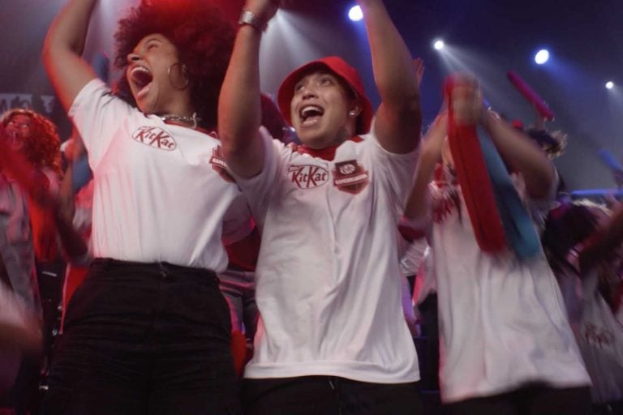

7 adaptações de games, além de Super Mario, que lideraram bilheterias
data 10.02.2023
O lançamento de Super Mario Bros alcançou a marca de US$ 830 milhões em bilheteria, a animação é a adaptação de videogame mais lucrativa dos últimos tempos, ultrapassando o recorde anterior de Warcraft, lançado em 2016, que arrecadou US$ 439 milhões, ao mesmo tempo em que se torna a maior bilheteria de um filme de 2023 nos cinemas. Ler mais
Culparam os games pela violência de novo: até onde é justo atribuir influência negativa dos jogos violentos?
data 12.02.2023Já pingou na timeline de vocês, na rede social que vocês ainda suportam, o vídeo do presidente da república, Luiz Inácio Lula da Silva, se tornando mais uma pessoa a jogar a culpa da violência da nossa sociedade nos games. Ler mais
Como a Nestlé utiliza os games para se conectar com novos públicos
data 16.02.2023 Como parte de seus esforços recentes em mapear e entender os comportamentos do público gamer, a Nestlé Brasil avançou em um de seus principais projetos relacionados a esse ecossistema, com a marca KitKat. A empresa, que renovou a parceria com a Riot Games, proprietária do jogo League of Legends, para o Campeonato Brasileiro de League of Legends (CBLoL), cuja final foi no fim de semana passado, em São Paulo, criou uma plataforma específica para se conectar com a torcida, em parceria com a agência Ogilvy. Ler mais